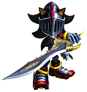

ソニックが武器を持つという設定は初めての試みではないでしょうか？
ソニックに“剣“を持たせるということに対して、反論はあがらなかったのでしょうか？
反論ですか？ありましたとも！
僕自身シャドウが銃を持ったときに「ありえない！」と飯塚さん（『シャドウ・ザ・ヘッジホッグ』プロデューサー兼ディレクター）にメールしましたから（笑）。
今も昔もソニックに武器を持たせてはいけない、ということになっています。ただ、そこが今回の抜け道というか。
ソニックには、今までいろいろな制限、しがらみで出来ないとされていたことがあるわけです。それを、ソニックが本の世界に入ることによって、その世界にマッチした、新しい設定のソニックとして登場させて、より大きなチャレンジができるシリーズとして期待していただけたらと思っています。
それにしたって肝心の剣を持ったソニックがカッコ良くないとチャレンジなんか許してもらえませんから、そこに関しては天池（『ソニックと暗黒の騎士』キャラクターデザインリーダー）や上川さんの努力の賜物と言えるでしょう。
あ、この辺の人物名、注釈付けといてください。今まで出た人もいるし、その他は後で出ますから（笑）。
アメリカで行ったフォーカステスト（発売前のゲームをプレイしてもらって率直な意見を聞く場）でも非常に子供たちに受けが良くって、みんな喜んでました。
ただ、一番人気はガウェインで、次にランスロットでしたけど（笑）。
ソニック！ソニックは！？（笑）。
いやあ、なんかね、コテだけ、っていうのが嫌だったみたい。もっと鎧を着て欲しかったみたいで。
確かに、ランスロットやガウェインの鎧姿がなかなかサマになっていますからね。
鍛冶屋のエプロン姿も若いお姉さま方にはなかなか魅力的だったようですよ（笑）。
今回、ソニックの仲間たちが、円卓の騎士としても登場してきます。
役柄の設定などでご苦労されたことはありましたか？
ないです。設定をみれば見るほど彼らのためにあるような役柄だと。
シャドウがランスロット、というのは海外からのたっての希望が実現したものです。実際のランスロットのエピソードを考えると開発としては少しイメージが違ったんですが、人気を考えれば無理もありませんね。
それからナックルズ、最近はいつもお笑いキャラだったんで、今回はかっこいいところを見せたかったんです。
パーシヴァルが女性なのに騎士？とかも少し問題になってましたね。騎士につける敬称の“サー”というのは、女性にはつけないそうで、「サー・パーシヴァル」と呼んでいいのかどうかとか。日本人だとあまり気にしないようなことも、世界で人気のソニックと「アーサー王と円卓の騎士」を扱う本作ならではの問題ですね。
片野さんはプログラマーでもありますよね。今回のプロジェクトで、プログラミング部分でもこだわった部分はありますか？
いや、なにも…（笑）。
逆にプログラムに口出しし始めたらみんなやりにくいかなと思って…。
メインプログラマの西村に『ひみリン』ですべて叩き込みましたから、今回も非常に安定感あふれる仕事っぷりでみんなを引っ張ってくれたと思いますよ。
今回のグラフィックも、また独特の世界観を生み出していて見事ですね！片野さん的にはどのようなイメージを持って、デザイナーの方たちと詰めていったのでしょうか？
ちょっとシリアスな、かっこいい、重い感じの…というイメージでいたんですが、詰めるというよりはほとんどアートディレクターの三浦まかせでしたよ。
僕は出来てきたものを見せてもらって、「おお、かっこいいねー」というだけの係りだったのかと思うくらい、いろいろスムーズに進んでました。ロゴもカットシーンもパブ素材も…。
ロゴやカットシーンのイメージ、それからTGSのムービーなんかは日野君に負うところも大きいですね。いやあ、かっこよかった！…あんまり自画自賛だと引きますかね（笑）？
今回の『ソニックと暗黒の騎士』では、サウンドディレクターを瀬上 純氏が担当しています。
初期の段階から関わっていたと思うのですが、片野さんのほうでサウンドチームに要望を出す場合、どのようにしてイメージを伝えていくのでしょうか？
え、電話とか、直接話をしたりとか…。
でも瀬上、話長いよね（笑）。あと細かい。管理用のエクセルとか必ず作ってるし。ファイル名とか長いし。あとチェックがとても厳しい。音声収録のときとか、すごいのなんのって。それよりSEと曲作れよ！って言ってて…。
え？そういう話ではなくて？
いや、一応同期だし、仲いいつもりだけど（笑）。
サウンドチームマネージャーの幡谷さんに「とりあえずメインテーマはCrush40で」ってお願いしたのが決定打じゃないかな。
その辺の話は今度発売になります「フェイス・トゥ・フェイス」と「テイルズ・オブ・ナイトフッド」のほうでも触れてますので、ご覧いただきたいと思います。
ええと、それでイメージの伝え方ですか？だから電話とかで…
そうじゃなくて？
どうやって今回の曲とか出来てきたかってこと？それを先に言って下さいよ。
まず、キーワードを投げます。今回でいうとソニックらしさもありつつ、でも様式美的な感じとか、荘厳な感じとか、そういうかしこまった音。あとケルト。
そのキーワードを元に、瀬上の半端ないライブラリの中から「こんなかんじ？」っていうアーティストのCDとかmp3が送られてきます。で、その感想を僕が書く。あ、よくマイナー（短調）なほうがいいとか、ギターソロとか、時々音をはずしてとかそんなこともリクエストしました。
メインテーマの「Knight of the Wind」の場合なら、ヴォーカルの終わりを短く切ったほうがいいとか、間奏に瀬上のギターソロ入れろとか、そういうことも言ったりしましたね。
でも大抵、僕が言う前に瀬上自身がイメージしていたり、彼の奥さんに既に言われてたりしたんじゃないかなあ。